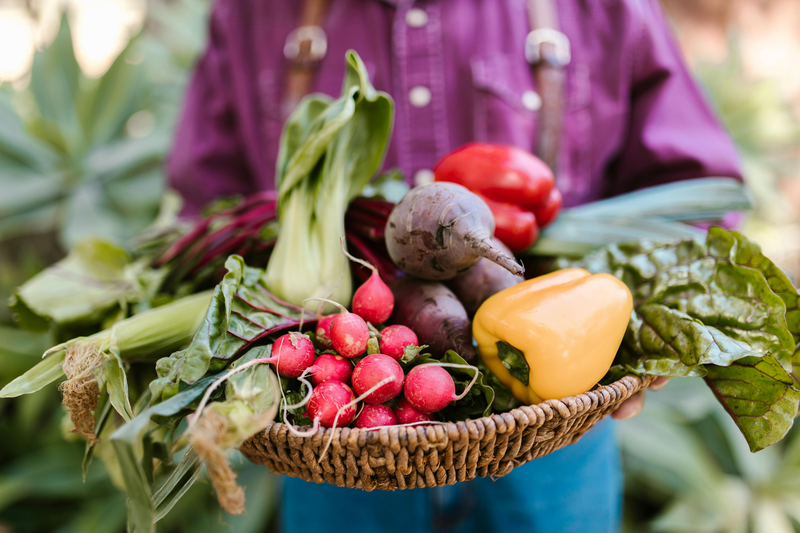
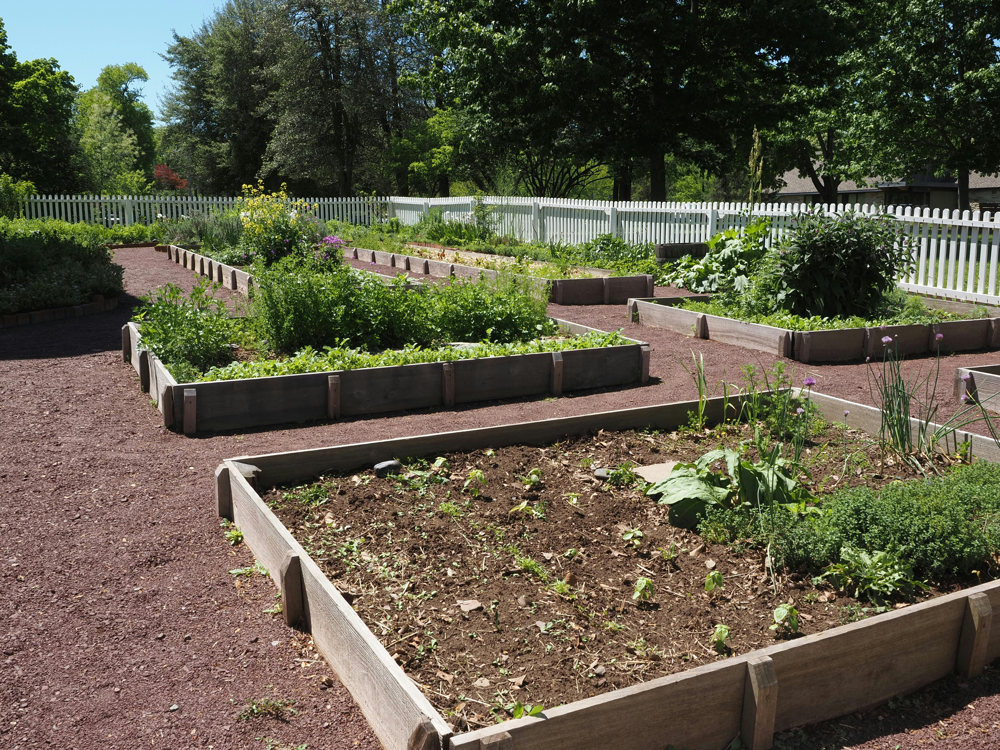
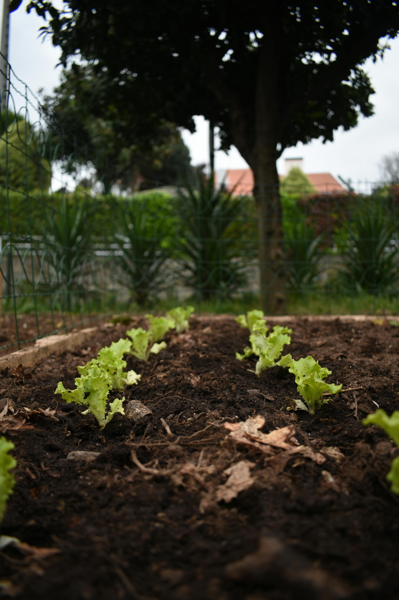
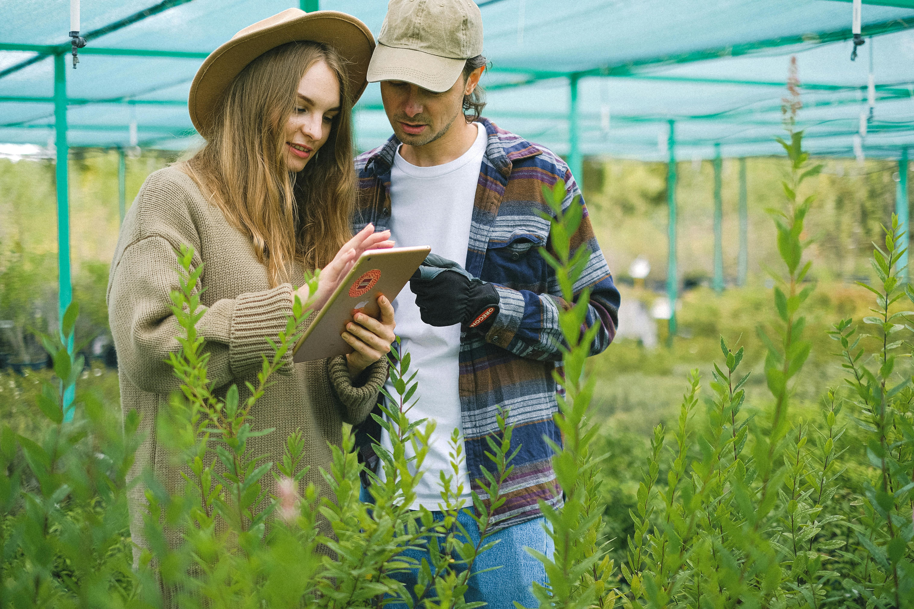
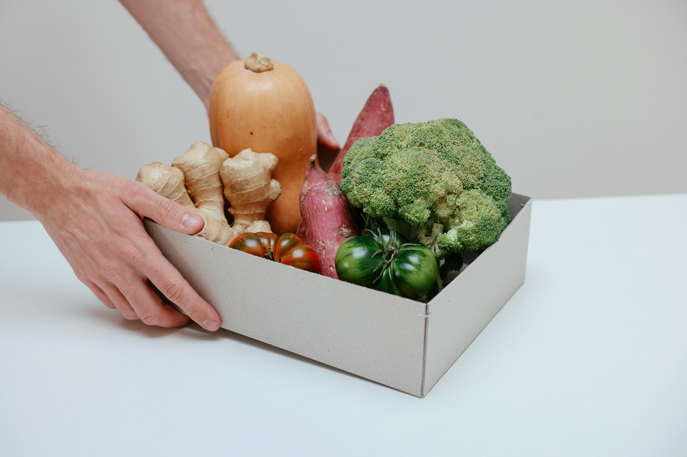

Cultivando conexões mais saudáveis
Conheça a história, os valores e o propósito da HortHome na construção de uma rede mais sustentável, acessível e conectada.


Onde tudo começou
A Horthome surgiu da ideia de aproximar produtores locais de consumidores que valorizam alimentos mais frescos, acessíveis e produzidos de forma mais consciente.
Observando os desafios enfrentados por pequenos produtores e a crescente busca por uma alimentação de qualidade, nasceu o propósito de criar uma plataforma capaz de conectar essas duas realidades.

Produzir com consciência
Acreditamos que uma produção em menor escala pode incentivar práticas mais cuidadosas, reduzir desperdícios e fortalecer a relação entre quem produz e quem consome.
Nosso objetivo é tornar a produção agrícola mais acessível, conectada e colaborativa, utilizando tecnologia para facilitar processos e aproximar pessoas.

O que move a HortHome
Valorizamos a transparência, a cooperação entre produtores e o compartilhamento de conhecimento como ferramentas para fortalecer comunidades locais.
Acreditamos que educação, inovação e planejamento são essenciais para construir uma agricultura mais eficiente e sustentável.

Olhando para o futuro
A Horthome busca crescer como uma rede sustentável de produção e distribuição de verduras e legumes, incentivando novos produtores e ampliando o acesso a alimentos de qualidade.
Queremos fortalecer comunidades, incentivar o empreendedorismo local e tornar a alimentação saudável mais acessível para diferentes regiões do país.